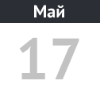

СРЕДА
17 МАЯ
17 МАЯ
20:00 МСК
ИВАН
ЗИМБИЦКИЙ
- Отец, блогер, путешественник, спортсмен
- Владелец 3 бизнесов (детский футбол, розница, онлайн)
- Автор 6 книг и более 200 публикаций
- Создал более 20 курсов и тренингов, которые прошли более 20 000 человек
- Помог более 1 000 предпринимателей начать успешный бизнес
- Владелец сети футбольных клубов для дошкольников
- Успешно управляет более 130 людьми (и живет счастливо)
- Создал мировую революцию в дестком футболе создав прибыльную модель футбольной школы для дошкольников от 3 до 7 лет
- Выступал на одной сцене с Джорданом Белфордом (Волк с Уолл-Стрит)
ДО СТАРТА ТРАНСЛЯЦИИ ОСТАЛОСЬ...
ВОТ ВСЕГО ЛИШЬ МАЛАЯ ЧАСТЬ ИЗ ТОГО, ЧТО ТЫ УЗНАЕШЬ НА ВЕБИНАРЕ:
- Простая 10 шаговая система для дизайна «Саморазвивающейся Компании» в 2017 году
- Как решить проблему людей №1 и масштабироать бизнес в 10 раз
- Какие 4 пункта плана внедрить за следующие 6 месяцев, чтобы освободить 80% вашего время
- 2 простых и легкие для внедрения «фишки», которые радикально поднимут эффективность компании
- 3 фундаментальные причины, почему Ваш бизнес никогда не масштабируется на свой 100% потенциал прибыли
- Вы или Вас: как перестать быть жертвой подчиненных и начать профессионально управлять людьми
- 3 тактики, которые превратят кризисную компанию в устойчивую и прибыльную в 2017 году
- Формула как построить здоровую и умную компанию на долгие годы, чтобы и внуки вами гордились
Формат участия: живое присутствие в онлайн всего 500 мест
(повтора и записи не будет)